Hierarchical Clustering
Statistical Programming using R
library(reshape2)
library(ggplot2)
library(FactoMineR)HAC
Package stat
Distances
To compute the distance, we use the dist() function in the same package.
dist(iris[1:5, -5]) # euclidean by default## 1 2 3 4
## 2 0.5385165
## 3 0.5099020 0.3000000
## 4 0.6480741 0.3316625 0.2449490
## 5 0.1414214 0.6082763 0.5099020 0.6480741dist(iris[1:5, -5], "manhattan")## 1 2 3 4
## 2 0.7
## 3 0.8 0.5
## 4 1.0 0.5 0.4
## 5 0.2 0.7 0.8 1.0dist(iris[1:5, -5], "minkowski", p = 3)## 1 2 3 4
## 2 0.5104469
## 3 0.4514357 0.2571282
## 4 0.5748897 0.3072317 0.2154435
## 5 0.1259921 0.6009245 0.4514357 0.5748897HAC
We use the hclust() function, in the package stats (already installed and loaded in each R session), to achieve a Hierarchical Ascendent Clustering.
d = dist(iris[-5])
h = hclust(d) # complete by default
h##
## Call:
## hclust(d = d)
##
## Cluster method : complete
## Distance : euclidean
## Number of objects: 150plot(h)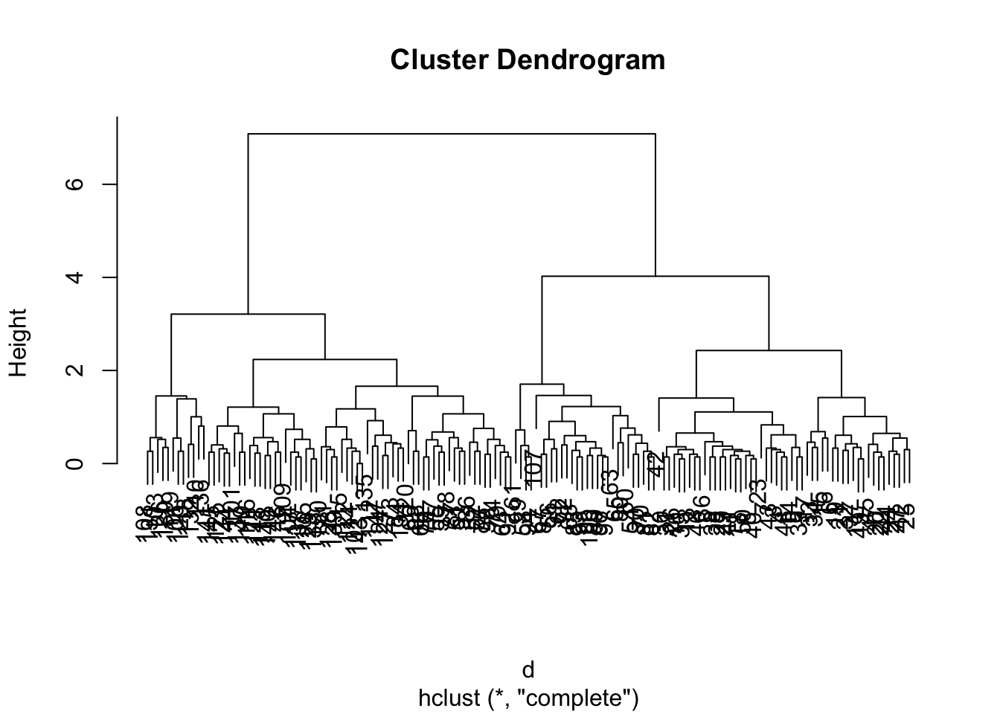
plot(h, hang = - 1, labels = FALSE)
Identify clusters
To identify interactively clusters, we can use the identify() function
plot(h)
zz.int = identify(h)
zz.int
sapply(zz.int, length)
z.int = Reduce(function(a, b) return(a + (b * (max(a) + 1))),
lapply(zz.int, function(c) return (1:nrow(iris) %in% c)))
table(z.int)Define specific number of clusters
When we choose a specific number of clusters
plot(h)
rect.hclust(h, 3)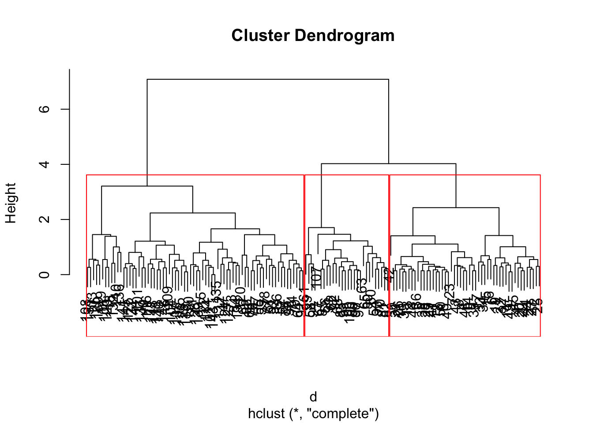
z = cutree(h, 3)
table(z)## z
## 1 2 3
## 50 72 28Example
But, in most of cases, the Ward criterion is a better choice. For that, we have to use the ward.D2 method in hclust().
hward = hclust(dist(iris[-5]), "ward.D2")
par(mar = c(2, 2, 2, 0) + .1)
plot(hward, hang = -1, labels = FALSE,
main = "Ward criterion", xlab = "", ylab = "")
rect.hclust(hward, 3)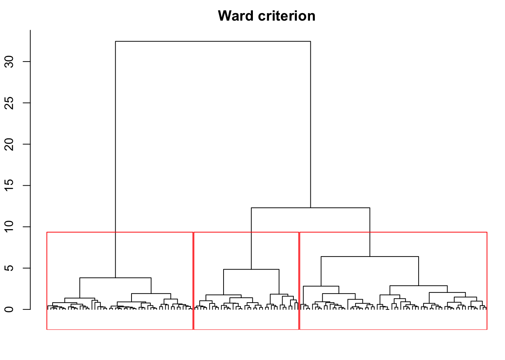
zward = cutree(hward, k = 3)
table(zward)## zward
## 1 2 3
## 50 64 36zward2 = cutree(hward, h = 10)
table(zward2)## zward2
## 1 2 3
## 50 64 36identical(zward, zward2)## [1] TRUEPackage cluster
This package is already installed with R.
library(cluster)Agglomerative nesting
agnes() function compute a hierarchical clustering directly from data.frame (see ?agnes for more details).
hagnes = agnes(iris[-5]) # euclidean metric and average method by default
hagnes## Call: agnes(x = iris[-5])
## Agglomerative coefficient: 0.9300174
## Order of objects:
## [1] 1 18 41 28 29 8 40 50 5 38 36 24 27 44 21 32 37
## [18] 6 19 11 49 20 22 47 17 45 2 46 13 10 35 26 3 4
## [35] 48 30 31 7 12 25 9 39 43 14 23 15 16 33 34 42 51
## [52] 53 87 77 78 55 59 66 76 52 57 86 64 92 79 74 72 75
## [69] 98 69 88 120 71 128 139 150 73 84 134 124 127 147 102 143 114
## [86] 122 115 54 90 70 81 82 60 65 80 56 91 67 85 62 89 96
## [103] 97 95 100 68 83 93 63 107 58 94 99 61 101 121 144 141 145
## [120] 125 116 137 149 104 117 138 112 105 129 133 111 148 113 140 142 146
## [137] 109 135 103 126 130 108 131 136 106 123 119 110 118 132
## Height (summary):
## Min. 1st Qu. Median Mean 3rd Qu. Max.
## 0.0000 0.2189 0.3317 0.4377 0.5081 4.0630
##
## Available components:
## [1] "order" "height" "ac" "merge" "diss" "call" "method" "data"plot(hagnes)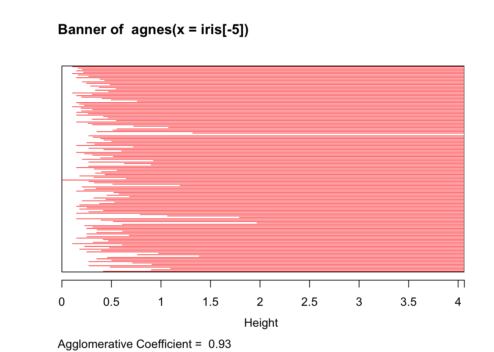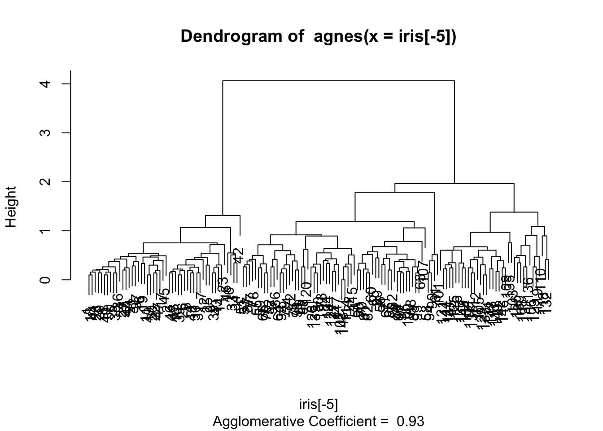
zagnes = cutree(as.hclust(hagnes), 3)
table(zagnes, zward)## zward
## zagnes 1 2 3
## 1 50 0 0
## 2 0 63 1
## 3 0 1 35Divisive clustering
For descedant clustering, we can use diana() function on a data.frame (see ?diana for more details).
ddiana = diana(iris[-5]) # euclidean metric
plot(ddiana)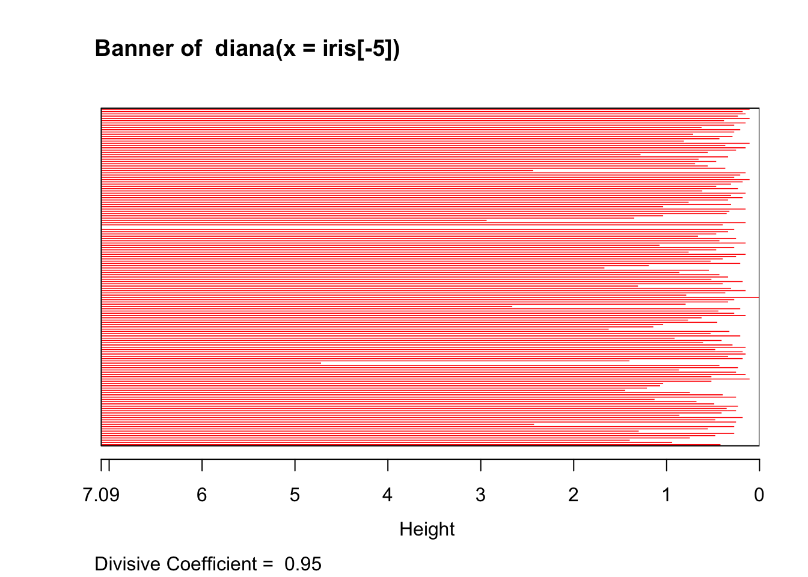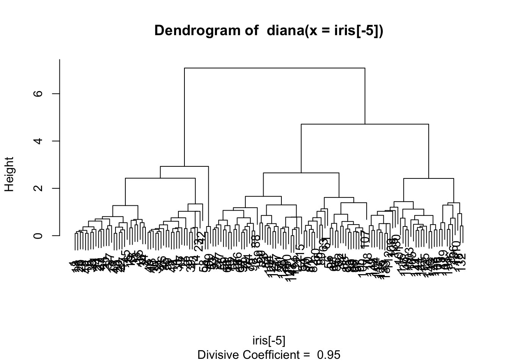
zdiana = cutree(as.hclust(ddiana), 3)
table(zdiana, zward)## zward
## zdiana 1 2 3
## 1 50 3 0
## 2 0 60 0
## 3 0 1 36Number of clusters
The package NbClust simplify the search of an interesting number of clusters
library(NbClust)The Nbclust() function performs the clustering process and computes a maximum of 30 indices, which can help us to determine a number of clusters.
For hierarchical clustering :
- the default distance is
euclidean, with the same choice than fordist()function - the available methods are the same as for
hclust()
nb = NbClust(iris[-5], method = "ward.D2")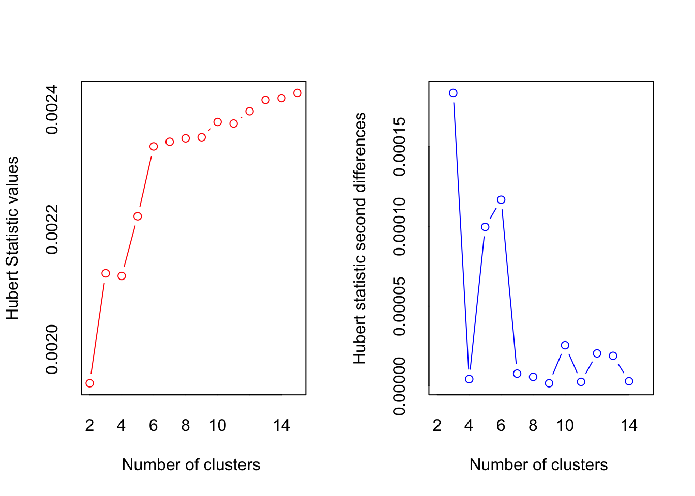
## *** : The Hubert index is a graphical method of determining the number of clusters.
## In the plot of Hubert index, we seek a significant knee that corresponds to a
## significant increase of the value of the measure i.e the significant peak in Hubert
## index second differences plot.
## 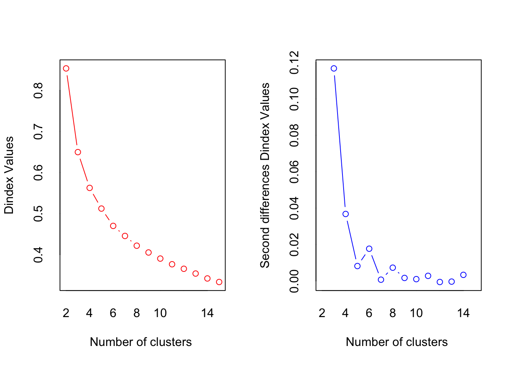
## *** : The D index is a graphical method of determining the number of clusters.
## In the plot of D index, we seek a significant knee (the significant peak in Dindex
## second differences plot) that corresponds to a significant increase of the value of
## the measure.
##
## *******************************************************************
## * Among all indices:
## * 9 proposed 2 as the best number of clusters
## * 10 proposed 3 as the best number of clusters
## * 3 proposed 6 as the best number of clusters
## * 1 proposed 9 as the best number of clusters
## * 1 proposed 15 as the best number of clusters
##
## ***** Conclusion *****
##
## * According to the majority rule, the best number of clusters is 3
##
##
## *******************************************************************We can explore the results for more details
t(nb$Best.nc)## Number_clusters Value_Index
## KL 2 5.6522
## CH 3 558.0580
## Hartigan 3 90.0205
## CCC 3 37.5901
## Scott 3 162.3374
## Marriot 3 57570.0077
## TrCovW 3 680.7408
## TraceW 3 55.1737
## Friedman 9 194.3999
## Rubin 3 -16.8561
## Cindex 2 0.2718
## DB 2 0.4360
## Silhouette 2 0.6867
## Duda 6 0.6889
## PseudoT2 6 16.2574
## Beale 6 1.0608
## Ratkowsky 2 0.5535
## Ball 3 51.0411
## PtBiserial 2 0.8358
## Frey 3 1.7714
## McClain 2 0.2622
## Dunn 2 0.3389
## Hubert 0 0.0000
## SDindex 2 1.3712
## Dindex 0 0.0000
## SDbw 15 0.0222par(mfrow = c(4, 7), mar = c(1, 1, 2, 0) + .1)
for (i in 1:ncol(nb$All.index)) {
plot(rownames(nb$All.index), nb$All.index[,i], type = "l",
main = colnames(nb$All.index)[i], axes = FALSE)
axis(1, at = rownames(nb$All.index), labels = rownames(nb$All.index),
lwd = 0, padj = -2)
best = nb$Best.nc[1,i]
if (best != 0)
points(best[1], nb$All.index[as.character(best),i], col = "red")
}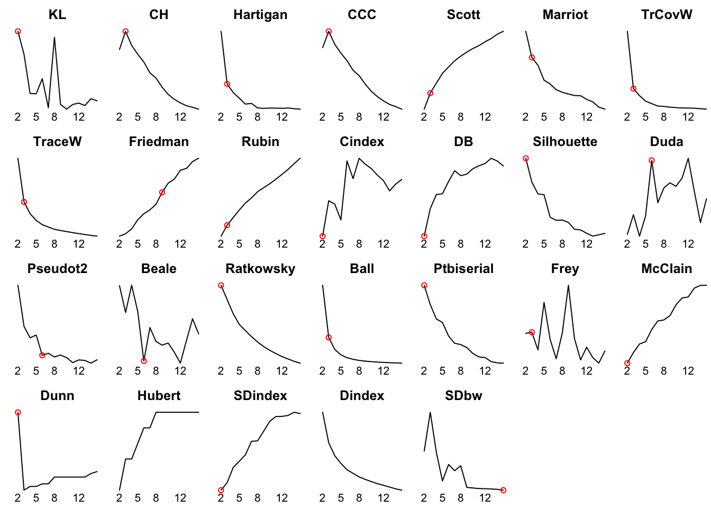
We get also the best partition
nb$Best.partition## [1] 1 1 1 1 1 1 1 1 1 1 1 1 1 1 1 1 1 1 1 1 1 1 1 1 1 1 1 1 1 1 1 1 1 1 1
## [36] 1 1 1 1 1 1 1 1 1 1 1 1 1 1 1 2 2 2 2 2 2 2 2 2 2 2 2 2 2 2 2 2 2 2 2
## [71] 2 2 2 2 2 2 2 3 2 2 2 2 2 2 2 2 2 2 2 2 2 2 2 2 2 2 2 2 2 2 3 2 3 3 3
## [106] 3 2 3 3 3 3 3 3 2 2 3 3 3 3 2 3 2 3 2 3 3 2 2 3 3 3 3 3 2 2 3 3 3 2 3
## [141] 3 3 2 3 3 3 2 3 3 2table(nb$Best.partition)##
## 1 2 3
## 50 64 36Clusters validation and representation
Some statistics on original attributes
table(iris$Species, nb$Best.partition)##
## 1 2 3
## setosa 50 0 0
## versicolor 0 49 1
## virginica 0 15 35apply(iris[-5], 2, tapply, nb$Best.partition, mean)## Sepal.Length Sepal.Width Petal.Length Petal.Width
## 1 5.006000 3.428000 1.462000 0.246000
## 2 5.920312 2.751562 4.420312 1.434375
## 3 6.869444 3.086111 5.769444 2.105556Some graphics to help us to analyse clusters
pairs(iris[-5], col = rainbow(3)[nb$Best.partition], pch = 19)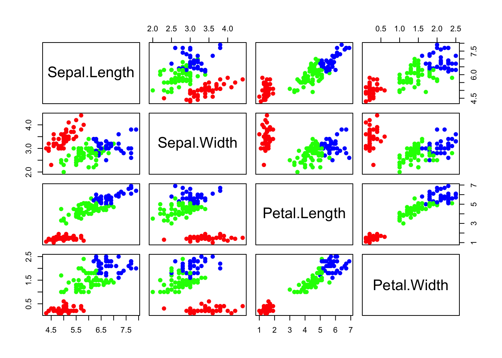
dres = data.frame(iris[-5], cluster = factor(nb$Best.partition))
dres.melt = melt(dres, id.vars = "cluster")
ggplot(dres.melt, aes(cluster, value, fill = cluster)) +
geom_boxplot() +
facet_wrap(~ variable, scales = "free")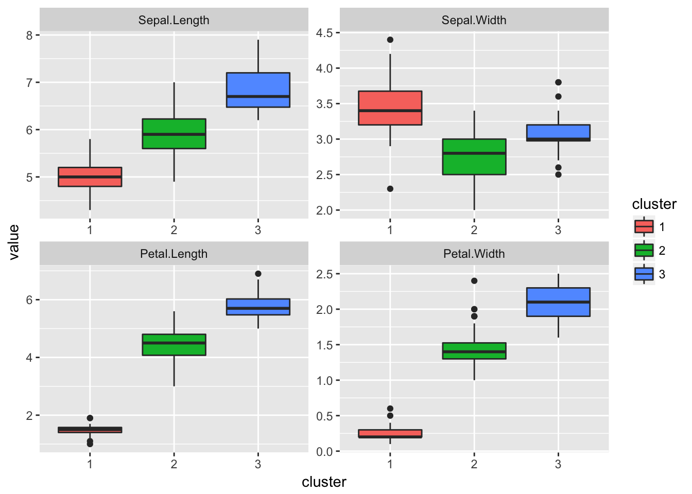
And, we can use the PCA projection to visualize clusters
pca = PCA(iris, quali.sup = 5, graph = FALSE)
res.pca = data.frame(pca$ind$coord, cluster = factor(nb$Best.partition))
ggplot(res.pca, aes(Dim.1, Dim.2, color = cluster)) +
geom_point() +
stat_ellipse()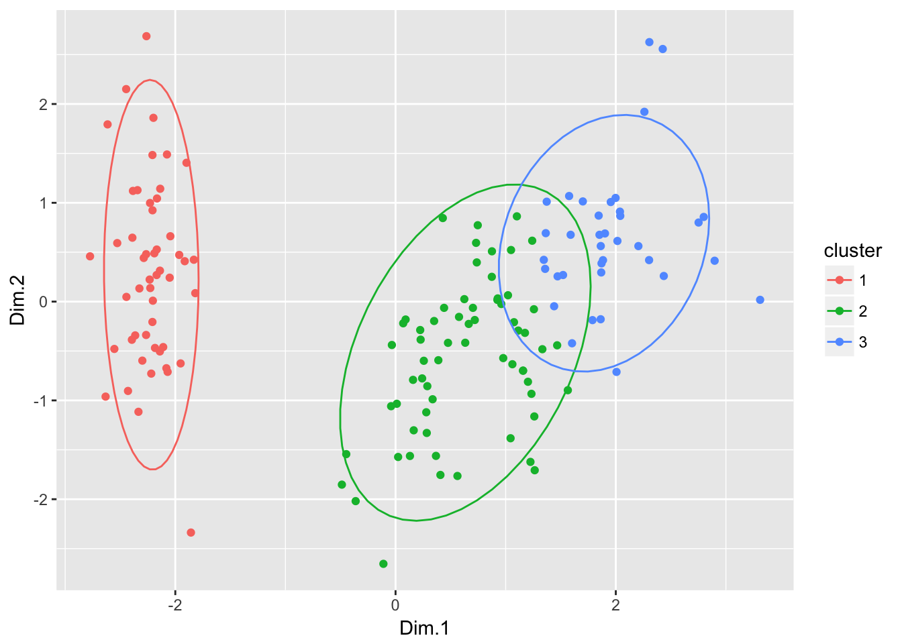
Some work
From the previous pendigits data, we conclude there are possibly different ways to write each digit. Use hierarchical clustering to find, for each digit, a number of types of writing, and represent them.